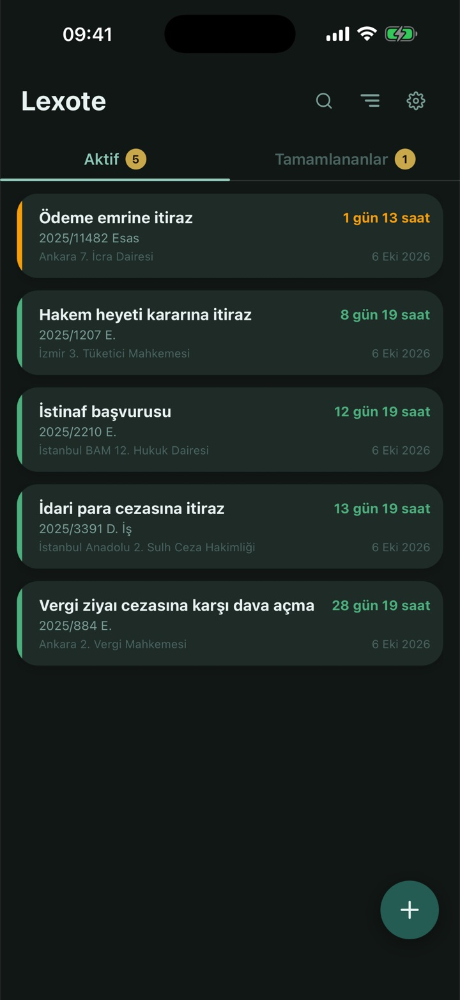

Avukatlar için süre ve not takibi
Son gün, kanuna göre hesaplanır.
Tebliğ tarihini ve süreyi seçin; Lexote resmî tatilleri, adli tatili ve e-tebligatı dikkate alarak son günü hesaplar, süre yaklaşırken size hatırlatır.

Hesabın dayandığı kurallar
Tebliğ günü sayılmaz; hafta ve ay, karşılık gelen günde biter.
Son gün tatile rastlarsa izleyen ilk iş günü.
Adli tatile tabi işlerde süre 7 Eylül'e uzar.
E-tebligat, ulaştığı günü izleyen 5. gün yapılmış sayılır.
Süre hesabı
Tarihi değil, gerekçesini de görün.
Lexote son günü gösterirken neden o gün olduğunu da yazar: tebliğin yapılmış sayıldığı gün, tatil nedeniyle kayma, adli tatil uzaması. Buradaki örnek, uygulamanın kendi hesap motoruyla hesaplandı.
-
10 Ekim 2026Cumartesi
Gerekçeli karar elektronik tebligat adresine ulaştı.
-
15 Ekim 2026Perşembe
Tebliğ yapılmış sayılır: ulaştığı günü izleyen beşinci gün.
Tebligat K. m.7/a -
+ 2 haftaİstinaf süresi
Hafta olarak belirlenen süre, son haftada başladığı güne karşılık gelen günde biter.
HMK m.345HMK m.92/2 -
29 Ekim 2026Perşembe · Cumhuriyet BayramıSon gün resmî tatile rastlıyor. Aradaki tatiller süreye dahildir; yalnızca son gün ileri kayar.
HMK m.93
Son gün
30 Ekim 2026, Cuma
Son gün tatile rastladığı için izleyen ilk iş gününe uzatıldı.
Bilgi amaçlı hesaplamadır; adli tatil ve özel düzenlemeler için mevzuatı teyit edin.
Ana ekran
Hangi dosya acil, renginden belli.
Her not, son güne kalan süreye göre renk alır ve kalan süre saatine kadar gösterilir. Süre filtresiyle yalnızca bir rengi görebilirsiniz.
Denemek için bir renge dokunun.
Dosya notu
Mahkeme veya kurum, dosya numarası ve açıklama tek notta. Mahkeme ve dosya numarası isteğe bağlıdır.
Sesli not
Duruşma çıkışında yazmaya vakit yoksa kaydedin. Bir nota birden fazla ses kaydı ekleyebilirsiniz.
Arama
Açıklama, dosya numarası, mahkeme ya da not içeriğinden arayın.
Tamamlananlar
İşi biten notu kaydırarak tamamlayın; aktif liste yalnızca bekleyen işleri gösterir. Tamamlanan not 72 saat sonra çöp kutusuna geçer.
Çöp kutusu
Silinen not 30 gün çöp kutusunda bekler; bu süre içinde geri alabilirsiniz.
Hesap açmadan başlayın
Misafir olarak hemen kullanın. Sonra hesap oluşturduğunuzda notlarınız yeni hesabınıza aktarılır ve tüm cihazlarınızdan erişirsiniz.
Koyu ve açık tema · Türkçe ve İngilizce
Pazartesi 12 Ekim
09:41
Hatırlatmalar
Süre dolmadan, zamanında haber verir.
Son günü olan her not için hatırlatmalar kendiliğinden kurulur. Hangilerinin geleceğini Ayarlar'dan seçersiniz.
- 7 gün kalaRenk değişimi
Not yeşilden turuncuya geçtiğinde:
Süreye 7 günden az kaldı.
- 1 gün kalaKritik uyarı
Süresi 24 saatten az kalan notlar için:
Yarın doluyor.
- Son günSüre doldu
Süre bittiği anda son bir bildirim.
- Her günGünlük özet
Belirlediğiniz saatte aktif notlarınızın ve kritik olanların sayısı.
Misafir modunda yalnızca kritik bildirimler gönderilir.
Veriler
Notlarınız nerede, açıkça yazıyor.
Frankfurt'ta saklanır
Notlarınız Google Cloud Firestore'da, Frankfurt (Almanya) veri merkezinde tutulur.
Şifreli iletişim
Uygulama ile sunucu arasındaki tüm iletişim TLS ile şifrelenir.
Hesapla birlikte silinir
Hesabınızı sildiğinizde notlarınız ve ses kayıtlarınız sunucudan otomatik olarak silinir.
Sorular
Sık sorulanlar
Lexote son günü nasıl hesaplıyor?
Tebliğ tarihini ve süreyi seçersiniz. Gün olarak belirlenen sürede tebliğ günü sayılmaz; hafta ve ay olarak belirlenen süre son hafta veya ayda başladığı güne karşılık gelen günde biter (HMK m.92).
Aradaki tatiller süreye dahildir; son gün resmî tatile rastlarsa süre izleyen ilk iş günü biter (HMK m.93). Adli tatile tabi işlerde son gün 20 Temmuz–31 Ağustos arasına düşerse süre 7 Eylül'e uzar (HMK m.104). E-tebligatta tebliğ, ulaştığı günü izleyen beşinci günün sonunda yapılmış sayılır (Tebligat K. m.7/a).
Hesaplanan son güne güvenebilir miyim?
Hesaplama bilgi amaçlıdır ve uygulamada her sonucun altında bu uyarı yer alır. Adli tatil ve özel düzenlemeler için mevzuatı teyit edin; nihai değerlendirme avukata aittir.
Hesap açmadan kullanabilir miyim?
Evet. “Kayıt olmadan devam et” ile misafir olarak başlayabilirsiniz. Daha sonra hesap oluşturduğunuzda misafir olarak eklediğiniz notlar yeni hesabınıza aktarılır. Misafir modunda yalnızca kritik bildirimler gönderilir.
Lexote ücretli mi?
Hayır, Lexote şu an ücretsizdir.
Verilerim nerede saklanıyor?
Notlarınız Google Cloud Firestore'da, Frankfurt (Almanya) veri merkezinde saklanır; ses kayıtları Firebase depolama alanında tutulur. Ayrıntılar gizlilik politikasında.
Hangi cihazlarda çalışır?
iPhone ve Android telefonlarda çalışır. Uygulama Türkçe ve İngilizce kullanılabilir; koyu ve açık tema seçeneği vardır. App Store ve Google Play sayfaları yakında açılacak.
Yakında App Store ve Google Play'de.
Lexote mağaza incelemesinde. Yayına girdiğinde bu sayfadaki düğmeler mağaza sayfalarına bağlanacak.
Sorularınız için: info@lexote.com.tr